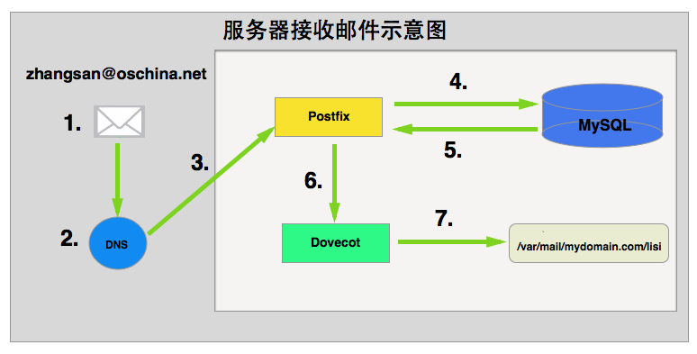
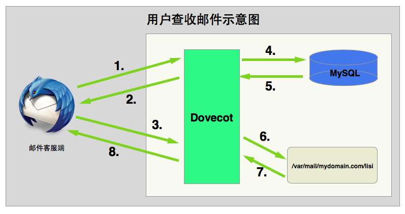
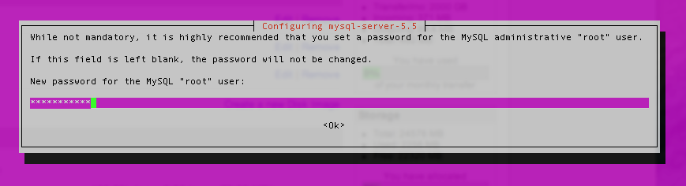
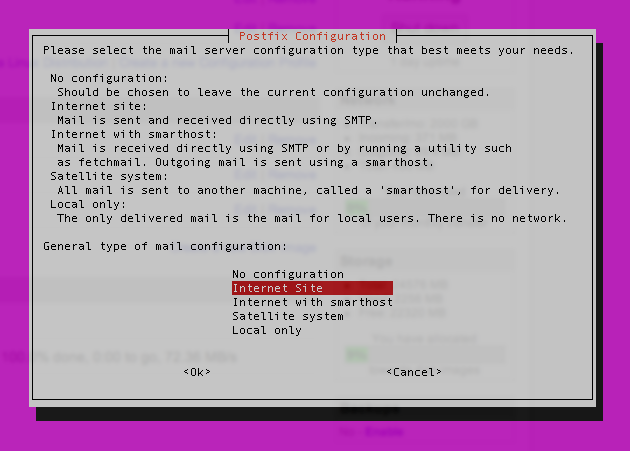

使用Postfix+Dovecot+MySQL搭建邮件服务器#
转载自 http://my.oschina.net/baratsemet/blog/413923（链接已失效）
补链：https://www.open-open.com/lib/view/open1431592348122.html
网上有很多使用Postfix搭建邮件服务器的文章，但目前貌似没有看到较为完整的一篇。本例将尝试在Ubuntu系统中使用Postfix+Dovecot+MySQL搭建邮件服务器。
说到邮件服务器，网上有许多不同解决方案。Window操作系统下常见的邮件服务器有hMailServer、MailEnable、EVOMailServer、Apache James(纯Java跨平台)等。
而在Linux/Unix系统中常用的邮件服务器也有不少选择，最经典也是最常见的莫过于Postfix。这篇文章将会讲述如何在Ubuntu系统之下，通过Postfix、Dovecot、MySQL整合实现普通意义上「邮件服务器」的大部分功能。
开始之前#
配置邮件服务器并不是一项简单的工作，其过程不仅需要一定的技术能力，同时也需要大家具有一定的耐心，同时也需要大家非常细心。为了能够「看懂」并「最终实践」这篇文章，大家还需要了解或掌握以下知识：
- Postfix：是一个标准的MTA「Mail Transfer Agent」服务器，它负责通过SMTP协议管理发送到本机的邮件以及由本机发向外界的邮件。在本例中，Postfix会把邮件的本地投递工作「接受到邮件之后将邮件存档到本地磁盘」交给Dovecot的LMTP服务「Local Mail Transfer Protocol service」处理。当然，当大家想通过服务器向外界发送邮件时，Postfix还将负责验证权限以确保服务器不被滥用。「很多邮件服务器根本没有对SMTP做用户验证，这将导致任何匿名用户都可以通过服务器向外界发送邮件，从而使得服务器变成垃圾中转站」
- Dovecot：是一个非常优秀的IMAP/POP服务器用以接收外界发送到本机的邮件。通常，Dovecot的工作内容包括：验证用户身份以确保邮件不会被泄露。在本例中，Dovecot将负责所有的「身份验证」工作，我们会配置Dovecot查询本地的MySQL数据库以确认用户身份
- MySQL：不必多说，它将存储所有的用户信息，其中包括：需要监听的域名信息、用户邮箱地址、登录密码、邮箱别名「alias」等
- Ubuntu：本例中的OS将选择Ubuntu14.10作为标准，其他Linux发行版的相关操作不在描述
工作原理#
服务器接收邮件的过程#
在开始讲述本例的内容之前，我们先来看看Postfix+Dovecot+MySQL是如何相互协作以实现邮件服务器的各项功能。我们假设张三通过oschina.net的邮箱zhangsan@oschina.net发送一份邮件给李四lisi@mydomain.com，则服务器接收邮件的过程大致如下图所示：

- zhangsan@oschina.net发送邮件到lisi@mydomain.com
oschina.net服务器会通过DNS查询mydomain.com的MX记录并找到Postfix所在的服务器- 邮件被发送给Postfix
- Postfix转向MySQL求助，以查询
mydomain.com是不是需要处理的域名 - MySQL返回确认信息给Postfix
- Postfix将接受到的邮件投递给Dovecot的LMTP服务以便做处理
- Dovecot将邮件内容保存到lisi@mydomain.com用户对应的磁盘路径
用户查收邮件的过程#
上述例子中我们看到了服务器接收邮件的过程，接下来我们看看，当大家通过用户名密码登录邮箱查看邮件时，会发生什么事情：

- 邮件客户端 to Dovecot：尊敬的Dovecot大人，您好！我阔以建立一个IMAP加密连接吗？
- Dovecot to 邮件客户端：当然阔以。这是我的SSL证书，请您告诉我帐号和密码！
- 邮件客户端 to Dovecot：好滴！这是我的用户名和密码，千万不要告诉别人哦！
- Dovecot to MySQL：Hi 美女！请问下，这个用户名和密码是正确的嘛？
- MySQL to Dovecot：好的，请稍后！呃……这个用户名和密码是正确的哦！
- Dovecot打开存放在本地磁盘
/var/mail/mydomain.com/llisi的mailbox - Dovecot获取到最新的邮件及其他相关信息
- Dovecot将邮件及其相关的其他信息通过IMAP协议发送给客户端
用户发送邮件的过程#
查收了最新的邮件之后，李四lisi@mydomain.com发现张三给他发来了邮件。现在，李四回复一封邮件给张三，会发生什么事情：

- 邮件客户端 to Postfix：尊敬的Postfix大人，您好！我阔以建立一个安全的SMTP连接嘛？
- Postfix to 邮件客户端：说人话！可以就是可以，干嘛要说「阔以」啊！你丫贱啊，找抽啊！想建立SMTP连接可以，不过要加密。这是我的SSL证书，告诉我你的帐号和密码，你个贱人！
- 邮件客户端 to Postfix：对不起，大人，我错鸟！这是我的帐号和密码，不要告诉别人哦！
- Postfix to Dovecot：Hi 帅哥，帮我查一下这个帐号和密码！
- Dovecot to MySQL：Hi 美女，这个帐号和密码是正确的呢？！还是正确的呢？！还是……
- MySQL to Dovecot：好啦，你乖啦！我查过啦，这个帐号密码是正确的啦！表卖萌哦，Dovecot君！
- Dovecot to Postfix：大锅，则个帐号密码斯正缺滴！
- Postfix to 邮件客户端：贱人，过来！你给的帐号密码是正确的，允许你发送邮件！
- 邮件客户端将编写好的邮件通过SMTP协议发送给Postfix
- Postfix将收到的邮件转发给对方
以上，大家已经看到邮件收、发的整个过程。接下来看看如何才能成功配置邮件服务器。
DNS配置#
首先，你需要有一个域名。本例中假定我们的域名为mydomain.com，以此为基础去做后续的所有工作。
请注意
在DNS相关配置没有成功之前，请勿尝试后续的操作。即使你配置好了Postfix，只要DNS相关配置没有成功，邮件服务器一样不能正常工作。
其次，登录域名管理系统「强烈推荐使用DNSPod做域名管理」，新增几条MX记录指向你的邮件服务器。
第三，关于TTL设置。在测试邮件服务器的过程中，大家大可把TTL时间设置的短一点，这样可以让DNS服务器在很短的时间之内就起作用。当测试阶段过后，请即使将TTL时间设置成较大的值。什么？你问为什么要这样？自己去Google一下看看吧！TTL设置的太短会带来什么安全隐患。
设置完以后，DNS的MX记录及TTL时间大致如下：
mydomain.com MX 10 mydomain.com
mydomain.com MX 10 12.34.56.78
mail.mydomain.com MX 10 12.34.56.78
SSL证书#
关于SSL认证的问题，大家可以根据自己的情况做决定。有人偏向于购买第三方权威的SSL认证，也有人使用OpenSSL自己制作签名（参考：Create self-signed certificate）。当然，上述两种方法本质上是没有什么区别的，唯一的区别在于：如果是自己制作的SSL证书，大部分的邮件客户端都会弹出提示框询问是否信任等。
修改hostname#
哈，终于进入了正题。现在，请大家打开终端「window系统用户可以选择使用putty等ssh工具连接服务器」并连接自己的服务器。
ssh username@12.34.56.78
连接成功以后，请第一时间执行下述命令切换到root用户：
sudo -s
请注意
为什么要切换到root用户？纯属个人爱好，因为我很懒，懒得每次执行命令时在命令的前面带上sudo这样的参数，因此直接切换到root用户好了。
接下来，在命令行中输入如下命令查看hostname：
hostname
接着，在命令行输入如下命令查看FQDN「fully-qualified domain name」：
hostname -f
将上述两个名称记录下来，安装postfix时你将会使用到。
当然，上述的机器名是可以随时修改的，如果你想要修改，可以直接通过vi编辑器打开/etc/hostname文件，并将自己想要的机器名写入其中并保存即可
MySQL安装及配置#
本例中我们使用MySQL数据库保存Postfix需要服务的虚拟域名、用户帐号及密码、邮件别名三个重要的信息。
请注意
其实Postfix和Dovecot是完全可以不使用数据库的，二者都可以通过各种配置文件完成「零数据库」的邮件服务器。但是，既然可以使用数据库这么方便，为什么不用呢？将这些需要配置的信息存储在数据库中「如：用户帐号及密码等」，对今后的维护来说是非常方便的事情。不是么？！
MySQL安装#
在Ubuntu种安装软件，是再简单不过的事情了。安装MySQL请在命令行中执行如下命令：
apt-get install mysql-server
安装过程中会需要你输入两次MySQL的root口令，请牢记该口令

新建数据库及用户#
接下来，我们需要新建一个MySQL用户及一个数据库：
- 使用root口令登录MySQL
mysql -u root -p
- 输入root口令
- 新建一个数据库，名称叫做
mailserver：
create database mailserver character set utf8;
- 输入如下命令以新建一个用户
mailserver，并指定密码为mailserver123：
create user mailserver@'localhost' identified by 'mailserver123';
- 将数据库
mailserver的所有权限赋给用户mailserver：
grant all on mailserver.* to mailserver@'localhost' identified by 'mailserver123';
- 退出root用户：
exit;
- 使用
mailserver用户登录：
mysql -u mailserver -p
- 输入
mailserver帐号的口令
- 将默认数据库切换为
mailserver数据库：
use mailserver;
新建表#
- 输入如下SQL语句以新建
virtual_domains表，该表是本地服务器用以接收邮件的域名：
CREATE TABLE `virtual_domains` (
`id` int(11) NOT NULL auto_increment,
`name` varchar(50) NOT NULL,
PRIMARY KEY (`id`)
) ENGINE=InnoDB DEFAULT CHARSET=utf8;
- 输入如下SQL语句以新建
virtual_users表，该表邮件服务器的终端用户表，记录用户的邮件地址及密码：
千万不要保存明文密码
CREATE TABLE `virtual_users` (
`id` int(11) NOT NULL auto_increment,
`domain_id` int(11) NOT NULL,
`password` varchar(106) NOT NULL,
`email` varchar(100) NOT NULL,
`enable` int(1) NOT NULL DEFAULT '1',
PRIMARY KEY (`id`),
UNIQUE KEY `email` (`email`),
FOREIGN KEY (domain_id) REFERENCES virtual_domains(id) ON DELETE CASCADE
) ENGINE=InnoDB DEFAULT CHARSET=utf8;
- 输入如下SQL语句以新建
virtual_aliases表，该表是邮件服务器别名表：
邮件服务器中的别名alias的概念大家可以Google一番
CREATE TABLE `virtual_aliases` (
`id` int(11) NOT NULL auto_increment,
`domain_id` int(11) NOT NULL,
`source` varchar(100) NOT NULL,
`destination` varchar(100) NOT NULL,
PRIMARY KEY (`id`),
FOREIGN KEY (domain_id) REFERENCES virtual_domains(id) ON DELETE CASCADE
) ENGINE=InnoDB DEFAULT CHARSET=utf8
插入数据#
为了便于查看结果，接下来给上述三张表种插入一些测试数据：
- 给
virtual_domains表插入测试数据，大致如下：
insert into virtual_domains(id,name) values(1,'mail.mydomain.com');
insert into virtual_domains(id,name) values(2,'mydomain.com');
请注意
上述表种id字段是自增列，可以不赋值。但无论如何，接下来的两张表种我们将需要上述表种的逐渐列id的值。比如：我将要添加mydomain.com域名下的邮箱帐号，而mydomain.com在virtual_domains表种的id值为2。
- 给
virtual_users表添加用户数据：
insert into virtual_users(id,domain_id,password,email) values (1,2,ENCRYPT('123456zhangsan', CONCAT('$6$', SUBSTRING(SHA(RAND()), -16))),'zhangsan@mydomain.com');
insert into virtual_users(id,domain_id,password,email) values (2,2,ENCRYPT('123456lisi', CONCAT('$6$', SUBSTRING(SHA(RAND()), -16))),'lisi@mydomain.com');
- 给
virtual_aliases表添加别名数据：
insert into virtual_aliases(id,domain_id,source,destination) values (1,2,'all@mydomain.com','zhangsan@mydomain.com');
insert into virtual_aliases(id,domain_id,source,destination) values (1,2,'all@mydomain.com','lisi@mydomain.com');
请注意
通过上述别名表的数据，当有人给all@mydomain.com发送邮件时，系统将自动将邮件转发给zhangsan@mydomain.com和lisi@mydomain.com。这种场景，在公司内部「发送通知」等情况下适用
测试数据#
写几个SQL查询语句查看下结果吧
select * from virtual_domains;
select * from virtual_users;
select * from virtual_aliases;
Postfix安装及配置#
Postfix是邮件发送的核心服务器，所有向内、向外投递的邮件都需要经过Postfix通过SMTP协议完成。接下来的内容，大家需要修改Postfix相关的一些参数，它们是：
- 告诉Postfix如何连接MySQL数据库，并让Postfix通过数据库种的表确定收发邮件的域名、用户帐号及密码、邮件别名等
- 告诉Postfix将收到的邮件转发给Dovecot的LMTP服务以完成本地投递
- 告诉Postfix所有的连接都需要STARTTLS加密，如果有必要「废话啊，当然必须这样」
- 开放本地端口25、465、587之一或全部
Postfix的安装#
在命令行种执行以下命令以安装Postfix：
apt-get install postfix postfix-mysql
安装过程中需要选择Postfix的类型，请选择Internet Site：

Postfix安装过程中还会需要输入System mail name，这里请输入你要收发邮件的域名地址「随便写也可以，反正后面需要修改配置文件」
Postfix的配置#
- 先备份Postfix的配置文件
/etc/postfix/main.cf！
cp /etc/postfix/main.cf /etc/postfix/main.cf.bak
请注意
任何时候，对任何配置进行修改之前，先做好备份总是非常必要的。同时，这也是一个非常良好的操作习惯。
- 使用vi编辑器打开
/etc/postfix/main.cf文件
vi /etc/postfix/main.cf
- 打开之后，按下 i 键进入编辑模式。
- 鉴于我们没有打算使用Postfix做用户的权限验证「上述几个图种已经展示清楚」，我们将要把Postfix默认的用户验证参数屏蔽，因此请在如下几行前边加入#符号以注释：
# TLS parameters
#smtpd_tls_cert_file=/etc/ssl/certs/ssl-cert-snakeoil.pem
#smtpd_tls_key_file=/etc/ssl/private/ssl-cert-snakeoil.key
#smtpd_use_tls=yes
#smtpd_tls_session_cache_database = btree:${data_directory}/smtpd_scache
#smtp_tls_session_cache_database = btree:${data_directory}/smtp_scache
- 复制如下内容，并将其插入到上述注释代码之后：
smtpd_tls_cert_file=/etc/dovecot/private/dovecot.pem
smtpd_tls_key_file=/etc/dovecot/private/dovecot.key
smtpd_tls_security_level = encrypt
# Enabling SMTP for authenticated users, and handing off authentication to Dovecot
smtpd_sasl_type = dovecot
smtpd_sasl_path = private/auth
smtpd_sasl_auth_enable = yes
smtpd_recipient_restrictions = permit_sasl_authenticated, permit_mynetworks, reject_unauth_destination
请注意
上述几个参数的含义，请参照Postfix配置文档
- 按照如下方式修改
mydestination一行的值：
mydestination = localhost
请注意
将mydestination的值修改为localhost，以便Postfix能够通过MySQL表中相关数据决定需要接受/发送邮件的域名，这样更具有通用性
- 在文档中加入以下内容，以便告诉Postfix不要使用LDA「Local Delivery Agent」转而使用Dovecot的LMTP完成本地邮件投递：
# Handing off local delivery to Dovecot's LMTP, and telling it where to store mail
virtual_transport = lmtp:unix:private/dovecot-lmtp
- 在文档中加入以下内容，以便告诉Postfix去MySQL数据库种寻找域名、用户帐号密码及邮件别名等信息：
# Virtual domains, users, and aliases
virtual_mailbox_domains = mysql:/etc/postfix/mysql-virtual-mailbox-domains.cf
virtual_mailbox_maps = mysql:/etc/postfix/mysql-virtual-mailbox-maps.cf
virtual_alias_maps = mysql:/etc/postfix/mysql-virtual-alias-maps.cf
- 最终，修改完成以后的
/etc/postfix/main.cf文件大致应该如下：
# See /usr/share/postfix/main.cf.dist for a commented, more complete version
# Debian specific: Specifying a file name will cause the first
# line of that file to be used as the name. The Debian default
# is /etc/mailname.
# myorigin = /etc/mailname
smtpd_banner = $myhostname ESMTP $mail_name (Ubuntu)
biff = no
# appending .domain is the MUA's job.
append_dot_mydomain = no
# Uncomment the next line to generate "delayed mail" warnings
# delay_warning_time = 4h
readme_directory = no
# TLS parameters
#smtpd_tls_cert_file=/etc/ssl/certs/ssl-cert-snakeoil.pem
#smtpd_tls_key_file=/etc/ssl/private/ssl-cert-snakeoil.key
#smtpd_use_tls=yes
#smtpd_tls_session_cache_database = btree:${data_directory}/smtpd_scache
#smtp_tls_session_cache_database = btree:${data_directory}/smtp_scache
smtpd_tls_cert_file=/etc/dovecot/private/dovecot.pem
smtpd_tls_key_file=/etc/dovecot/private/dovecot.key
smtpd_tls_security_level = encrypt
# Enabling SMTP for authenticated users, and handing off authentication to Dovecot
smtpd_sasl_type = dovecot
smtpd_sasl_path = private/auth
smtpd_sasl_auth_enable = yes
smtpd_recipient_restrictions = permit_sasl_authenticated, permit_mynetworks, reject_unauth_destination
# See /usr/share/doc/postfix/TLS\_README.gz in the postfix-doc package for
# information on enabling SSL in the smtp client.
myhostname = host.mydomain.com
alias_maps = hash:/etc/aliases
alias_database = hash:/etc/aliases
myorigin = /etc/mailname
# mydestination = example.com, hostname.mydomain.com, localhost.mydomain.com, localhost
mydestination = localhost
relayhost =
mynetworks = 127.0.0.0/8 [::ffff:127.0.0.0]/104 [::1]/128
mailbox_size_limit = 0
recipient_delimiter = +
inet_interfaces = all
# Handing off local delivery to Dovecot's LMTP, and telling it where to store mail
virtual_transport = lmtp:unix:private/dovecot-lmtp
# Virtual domains, users, and aliases
virtual_mailbox_domains = mysql:/etc/postfix/mysql-virtual-mailbox-domains.cf
virtual_mailbox_maps = mysql:/etc/postfix/mysql-virtual-mailbox-maps.cf
virtual_alias_maps = mysql:/etc/postfix/mysql-virtual-alias-maps.cf
- 按下ESC键并输入如下内容以保存并退出
wq!
- 新建
/etc/postfix/mysql-virtual-mailbox-domains.cf文件并输入如下内容：
user = mailserver
password = mailserver123
hosts = 127.0.0.1
dbname = mailserver
query = SELECT 1 FROM virtual_domains WHERE name='%s'
- 重启Postfix服务
service postfix restart
- 测试上述内容是否正确，如果上述内容配置正确，则如下命令执行后返回结果应该为1：
postmap -q mydomain.com mysql:/etc/postfix/mysql-virtual-mailbox-domains.cf
- 新建
/etc/postfix/mysql-virtual-mailbox-maps.cf文件并输入如下内容：
user = mailserver
password = mailserver123
hosts = 127.0.0.1
dbname = mailserver
query = SELECT 1 FROM virtual_users WHERE enable=1 AND email='%s'
- 重启Postfix服务
service postfix restart
- 测试上述配置是否正确，如果上述内容配置正确，则如下命令执行后返回结果应该为1：
postmap -q lisi@mydomain.com mysql:/etc/postfix/mysql-virtual-mailbox-maps.cf
- 新建
/etc/postfix/mysql-virtual-alias-maps.cf文件并输入如下内容：
user = mailserver
password = mailserver123
hosts = 127.0.0.1
dbname = mailserver
query = SELECT destination FROM virtual_aliases WHERE source='%s'
- 重启Postfix服务
service postfix restart
- 测试上述配置是否正确，如果上述配置正确，则如下命令执行后返回结果应该是之前添加的别名帐号：
postmap -q all@mydomain.com mysql:/etc/postfix/mysql-virtual-alias-maps.cf
- 使用vi编辑器打开
/etc/postfix/master.cf文件「请注意修改之前先备份」，找到submission和smtps所在的两行，并将其注释去掉。这样做的目的是允许Postfix通过587和465端口发送邮件。
- 重启Postfix服务
service postfix restart
搞定，Postfix服务器应该配置完成了。相信到这里的时候，已经吓走了90%以上的朋友，剩下的10%朋友们，你们是好样的。
Dovecot安装及配置#
Dovecot在本例中充当IMAP、POP服务器的角色，同时它也将负责用户登录时用户身份的验证「Dovecot会将真正的验证工作交给MySQL处理」。因为使用SSL，Dovecot将会使用993「IMAP协议」及995「POP协议」与外界交流，若服务器有iptable之类的玩意儿，请开放相关端口。
这部分的内容配置起来相对简单，但是需要配置的文件繁多。大体上，我们需要配置如下的信息：
- 开启Dovecot的IMAP、POP3、LMTP协议
- 告知Dovecot本地邮件的投档路径
- 连接Dovecot和MySQL数据库以验证用户身份
- 配置SSL加密相关信息
Dovecot的安装#
通过如下命令安装Dovecot最新版：
apt-get install dovecot-core dovecot-imapd dovecot-pop3d dovecot-lmtpd dovecot-mysql
Dovecot的配置#
需要修改的配置文件有：
- /etc/dovecot/dovecot.conf : Dovecot的主配置文件
- /etc/dovecot/conf.d/10-mail.conf : Dovecot将要操作的磁盘路径相关配置信息
- /etc/dovecot/conf.d/10-auth.conf : 用户验证相关配置信息
- /etc/dovecot/conf.d/auth-sql.conf.ext : SQL-Type验证相关配置信息
- /etc/dovecot/dovecot-sql.conf.ext : Dovecot与数据库连接相关配置信息
- /etc/dovecot/conf.d/10-master.conf : Dovecot本地socket相关配置信息
- /etc/dovecot/conf.d/10-ssl.conf : 关于SSL的相关配置信息
请注意
在修改上述文件之前，请一定先做好备份以方便恢复
修改/etc/dovecot/dovecot.conf文件#
使用vi编辑器打开/etc/dovecot/dovecot.conf文件并在文件中加入如下内容：
!include conf.d/*.conf
# Enable installed protocols
!include_try /usr/share/dovecot/protocols.d/*.protocol
protocols = imap pop3 lmtp
如果以上内容已经存在，只需要把该行的#号去掉即可
上述内容大致的意思是：告诉Dovecot启用所有.conf文件；并开启Dovecot的imap、pop3、lmtp等相关协议使之正常工作
修改/etc/dovecot/conf.d/10-mail.conf文件#
打开文件并找到mail_location相关信息，将其指定到本地磁盘的某个路径，这个路径将来会存放收到的邮件，如下所示：
mail_location = maildir:/var/mail/vhosts/%d/%n
同时，找到文件中mail_privileged_group相关信息并将起修改为：
mail\_privileged\_group = mail
保存文件并退出
在命令行种输入如下内容以查看/var/mail路径的权限：
ls -ld /var/mail
显示的内容大致应该是：
drwxrwsr-x 2 root mail 4096 May 11 15:08 /var/mail
创建/var/mail/vhosts/文件夹给每个需要启用的域名：
mkdir -p /var/mail/vhosts/mydomain.com
输入如下命令以新建vmail用户组及用户并赋权限
groupadd -g 5000 vmail useradd -g vmail -u 5000 vmail -d /var/mail
接下来修改一下/var/mail/目录的权限，使vmail能够访问：
chown -R vmail:vmail /var/mail
修改/etc/dovecot/conf.d/10-auth.conf文件#
找到文件中disable_plaintext_auth并取消注释
disable\_plaintext\_auth = yes
找到文件中auth_mechanisms并将其修改为如下值：
auth_mechanisms = plain login
默认情况下，Dovecot是允许Ubuntu系统用户登录使用的，我们需要将其禁用。找到文件种如下内容并将其注释：
# !include auth-system.conf.ext
开启Dovecot的MySQL支持，取消!include auth-sql.conf.ext的注释符号：
# !include auth-system.conf.ext
!include auth-sql.conf.ext
#!include auth-ldap.conf.ext
#!include auth-passwdfile.conf.ext
#!include auth-checkpassword.conf.ext
#!include auth-vpopmail.conf.ext
#!include auth-static.conf.ext
修改/etc/dovecot/conf.d/auth-sql.conf.ext文件#
在文件中加入如下内容：
passdb {
driver = sql
args = /etc/dovecot/dovecot-sql.conf.ext
}
userdb {
driver = static
args = uid=vmail gid=vmail home=/var/mail/vhosts/%d/%n
}
修改/etc/dovecot/dovecot-sql.conf.ext文件#
取消文件中driver行的注释，并将其修改为如下：
driver = mysql
取消文件中connect行的注释，并将其修改为如下：
connect = host=127.0.0.1 dbname=mailserver user=mailserver password=mailserver123
取消文件中default_pass_scheme行的注释，并将其修改为如下：
default_pass_scheme = SHA512-CRYPT
取消文件中password_query行的注释，并将起修改为如下：
password_query = SELECT email as user, password FROM virtual_users WHERE enable=1 AND email='%u';
保存退出
在命令行种输入如下内容以修改目录权限：
chown -R vmail:dovecot /etc/dovecot
chmod -R o-rwx /etc/dovecot
修改/etc/dovecot/conf.d/10-master.conf文件#
打开文件做如下修改「通过将端口设置为0，以禁用非SSL加密的IMAP和POP3协议」：
service imap-login {
inet_listener imap {
port = 0
}
# ...
}
service pop3-login {
inet_listener pop3 {
port = 0
}
# ...
}
找到文件中的service lmtp并将其修改如下：
service lmtp {
#unix_listener lmtp {
#mode = 0600
#}
unix_listener /var/spool/postfix/private/dovecot-lmtp {
mode = 0600
user = postfix
group = postfix
}
# Create inet listener only if you can't use the above UNIX socket
# inet_listener lmtp {
# # Avoid making LMTP visible for the entire internet
# address =
# port =
# }
}
找到文件中service auth并将其内容修改如下：
service auth {
# auth_socket_path points to this userdb socket by default. It's typically
# used by dovecot-lda, doveadm, possibly imap process, etc. Its default
# permissions make it readable only by root, but you may need to relax these
# permissions. Users that have access to this socket are able to get a list
# of all usernames and get results of everyone's userdb lookups.
unix_listener auth-userdb {
mode = 0600
user = vmail
# group =
}
# Postfix smtp-auth
unix_listener /var/spool/postfix/private/auth {
mode = 0666
user = postfix
group = postfix
}
# Auth process is run as this user.
user = dovecot
}
找到文件中service auth-worker内容并修改如下：
service auth-worker {
# Auth worker process is run as root by default, so that it can access
# /etc/shadow. If this isn't necessary, the user should be changed to
# $default_internal_user.
user = vmail
}
修改/etc/dovecot/conf.d/10-ssl.conf文件#
找到文件中ssl_cert并修改内容如下「请确保dovecot的pem文件已经存在，如果大家使用了自己的SSL文件，请将如下内容修改为相应的路径」：
ssl_cert =
强制用户使用SSL加密：
ssl = required
重新启动Dovecot服务：
service dovecot restart
测试邮件服务器是否正常#
设置一个帐号，可以向MySQL对应的表中插入数据，接下来使用邮件客户端来测试一下。推荐使用Thunderbird邮件客户端或者Foxmail客户端等。请注意以下内容：
- 邮箱的全称「包括后面的@mydomain.com」将作为用户名
- 邮箱密码是MySQL数据库种对应邮箱的密码
- 服务器相关接口是否全部开放？993、995、25等
- 邮件收发的所有协议，包括IMAP、POP3、SMTP全部都需要开启SSL加密
配置好客户端之后即可连接获取、发送邮件。